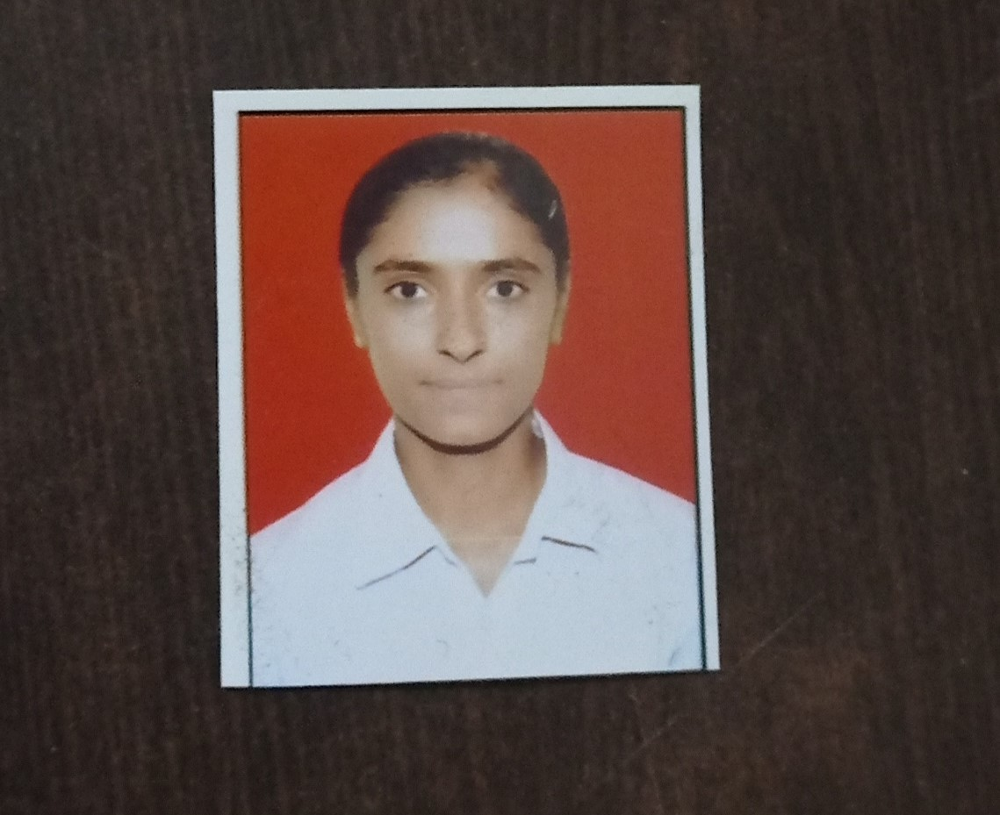

Pooja

Objective
A well-organized, creative and goal oriented graduate possessing excellent communication and
problem-solving skills with a flair to explore suitable avenues in Computer Science Engineering
while developing advanced projects with efficiency and quality.
Education:
-
Bachelors in Computer Science Engineering | Chandigarh University, Gharuan, Mohali, Punjab.
Session: 2020-2024 CGPA:7.19
-
Intermediate: New Pragati Sen Sec School Dahola Jind Haryana.
Session: 2018-2019 Percentage:81.6%
-
Matriculation: Gyan Sarovar Vidya Mandir High School, Jind.
Session: 2016-2017 Percentage: 94.2%
Projects:
-
Photography Website:
- This was a project done during college projects.
- Build a project on Photography Website: A basic website
on photography which helps to learn various frontend and
backend technologies like HTML, CSS, PHP etc.
-
Home Rental Webapp:
- Web development with php from solitaire Infosys.
- Home Rental Webapp: This WebApp will help user to
register individual home or apartment to assist you in
finding the perfect rental home or property.
Skills:
- c, c++
- Web Development
- Active Listener
- Time Management
Certifications:
- Elite badge winner in Programming in java NPTEL course.
- Certification from internshala in Machine Learning.
- Certification of completion of training from solitaire Infosys.
Other:
Contact Me
Hobbies